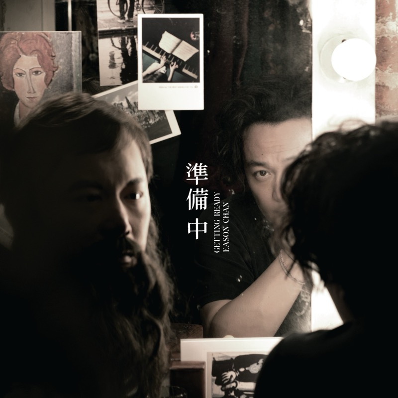

Getting Ready
准备中
粤语专辑 · 全碟填词 袁两半（潘源良）
陈奕迅出道二十年时的一张粤语专辑，十首歌，约 42 分钟。虽然是粤语，歌词却很打动人，有激励，有人情世故，也有个人的力量感。整张的词都出自袁两半（潘源良的笔名），所以听起来不像单曲拼盘，更像一个中年人在不同处境下的连续自白：上班、爱、坚持、疲惫、和解、出发、独处、做梦。它写的不是少年热血，而是成年人还愿不愿意继续用力活下去。 后来再听，能听出其中的力量，歌词和旋律很搭，是一张可以慢慢咀嚼的专辑。翻着实体唱片内页的歌词听，又回到了小时候听磁带的感觉。
歌词
Tracks
- 01老细我撇先4:02
曲 Russell Harris · 编 刘志远 · 监制 Jim Lee
上班族的语境。不是愤怒的反抗，是“我很累，但我还在跑”。
- 02无条件3:49
曲 Eric Kwok · 编 张子坚 · 监制 Eric Kwok
首波主打，Eric Kwok 作曲。写的不是戏剧性的爱情，而是“我知道世界复杂，但我还是愿意站你这边”。唱法把感情压低、压稳，所以耐听。 再听时，它像是网络时代信息洪流的写照。
- 03人生马拉松4:51
曲 曲世聪 · 编 刘志远 · 监制 Jim Lee
渣打香港马拉松二十周年主题曲。不是胜利宣言，是咬牙往前。
- 04黑洞3:45
曲 曲世聪 · 编 刘志远 · 监制 Jim Lee
开始往里挖：承认人会空、会乱，有说不清的阴影，但还是要继续走。
- 05心烧3:44
曲 Eric Kwok · 编 张子坚 · 监制 Eric Kwok
- 06喜欢一个人4:34
曲 Eric Kwok · 编 林知秋 · 监制 Eric Kwok
- 07万圣节的一个传说4:07
曲 曲世聪 · 编 刘志远
- 08起点．终站4:10
曲 谢霆锋 · 编 王双骏
第二主打，谢霆锋作曲，王双骏编曲。以为到了终点，可能只是另一个起点。兄弟情、人生感、命运感混在一起。
- 09一个灵魂的独白5:06
- 10梦的可能4:14
曲 Russell Harris · 编 刘志远
Credits
- 全碟填词 — 袁两半（潘源良）
- 监制 — Jim Lee 李振权、Eric Kwok
Notes
为什么叫《准备中》
据陈奕迅在采访里的说法，专辑原本想叫《寻找中》，和潘源良聊过之后改成了《准备中》。他喜欢日料店门口挂“准备中”牌子的那种意境：门还没开，里面正在忙，带着期待，也有一点神秘。
曲风
这不是陈奕迅最先锋、最实验的一张，反而很“稳阵”：港乐成熟期那种中速抒情，讲究旋律线条和词意的承接，再加上 2010 年代更干净的制作。它不靠重拍、爆点和电子质感抓耳，靠的是旋律、咬字和情绪的推进。它不是来“炸”的，是来“沉”的。一句话：一张“成年人还愿意相信自己”的专辑，懂世故，但没有完全向世故投降。
延伸聆听
粤语和中文：陈奕迅《L.O.V.E.》（更松弛，像续篇）、《C'mon In~》（国语，更内省）；麦浚龙《Addendum》（更暗、更文学）；谢安琪《Kontinue》（更多社会观察）；张敬轩《Felix》（城市感和精致的抒情）。英文：Leonard Cohen《You Want It Darker》、David Bowie《Blackstar》。 同样有时代感又耐听的，还有万能青年旅店《冀西南林路行》（2020），用诗意的歌词写现代社会的变迁。